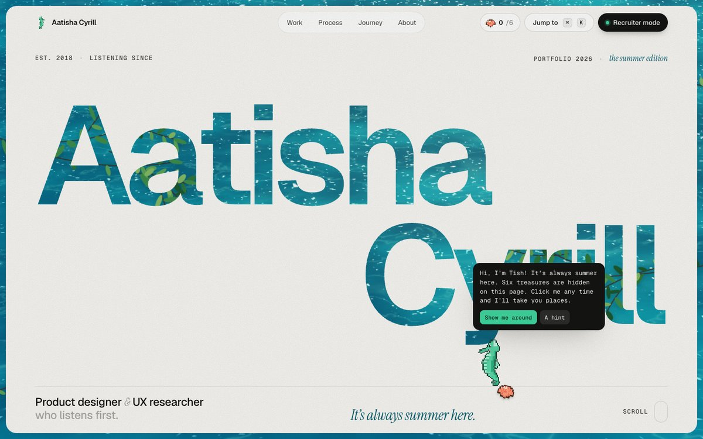
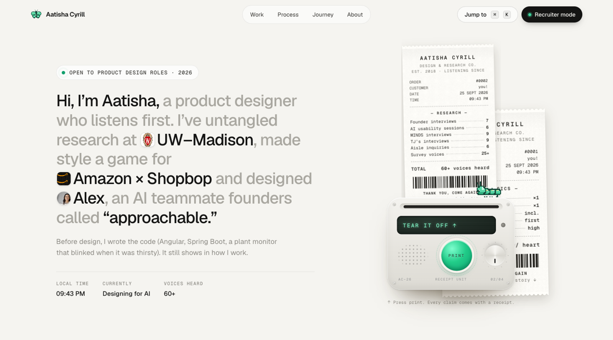

Every version is kept. v3 “Summer receipts” is the current direction: v1’s polished design system, mascot and interactions, with your “always summer” ideas added in the same grown-up style. v1 is frozen exactly as you approved it. v2 stays as an explored direction.

v1 as the base: Geist and Instrument Serif, warm off-white, a mint accent, the receipt printer, ⌘K and Recruiter mode. Now the page is a frame floating on live sea water. Your name is cut out of it so the water and leaves show through. Work is one big folder with small folders below it: pick one and the big folder sinks, changes colour and rises with the new story. Six pixel treasures are hidden around the site, each holding a quote. About is an envelope of scalloped summer prints that develop as you toss through them. Contact sits on the water, where a message in a bottle washes ashore.
Open v3 →
A hero printer with a detent dial and an end-of-roll Grand Total you stamp. Receipts you can tear and drag, fanning folders, story sheets, a scroll-scrubbed affinity map, a Gantt-style journey, a lab bento, a personal “off the clock” section with a bookshelf, ⌘K with “Ask Aatisha”, and a Recruiter mode that turns the page into a one-page résumé.
Open v1 →Explored · not chosen
Round 1 · archived explorations